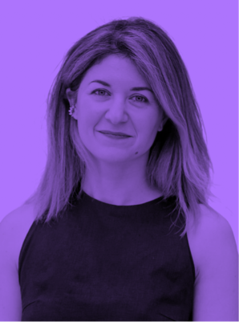

Личный бренд
фандрайзера:
как не поссориться
с руководителем
и сделать
сотрудников
амбассадорами
Фандрайзер — это голос организации и связующее звено с донорами. Но чем активнее специалист развивает личный бренд, тем острее встают вопросы: как делать это этично и безопасно, не вступая в конфликт с руководителем и не нанося вреда организации. И нужно ли руководителю поощрять личные бренды сотрудников, и если да — какие условия и специалистов для этого привлекать? Эти вопросы мы задали Галине Хатиашвили, автору Telegram-канала Unlikely CMO, лидеру стратегических коммуникаций в крупном финтехе.

Что делать фандрайзеру:
Прозрачность вместо страха
Если кто-то из команды в НКО начинает развивать личный бренд, руководитель, как правило, боится, что сотрудник «уйдёт и заберёт базу доноров». Это реальный риск, но без личных связей фандрайзера успехи фонда тоже невозможны.
Решить это противоречие можно на старте сотрудничества — через честный разговор. Не нужно хитрить или скрывать активность в соцсетях. Важно открыто обсудить с руководителем, что личный бренд сотрудника работает на фонд, пока они вместе. При этом можно договориться о «совместном владении» каналом: например, Telegram-канал фандрайзера поддерживает фонд, а после ухода человека канал остаётся у организации (или переходит кому-то другому в команде по соглашению). Главное — чтобы условия были прозрачными и комфортными для обеих сторон.
Оставлять коммуникацию «на потом» точно не стоит, считает Галина Хатиашвили:
«Вопросы развития личного бренда важно проговорить на старте. Иначе кто-то из двух сторон точно что-то будет скрывать, хитрить — ни к чему хорошему такое сотрудничество не приводит».
Что делать руководителю:
Поощрять, обучать и показывать пример
Когда все условия оговорены, есть ещё другая сторона медали: как руководителю создать среду, в которой топ-менеджмент и фандрайзеры захотят развивать личные бренды?
Здесь есть несколько вариантов.
-
Собственным примером
Когда первое лицо или руководитель отдела сами ведут соцсети. Это снимает страх у руководителя и помогает немного раскрепостить обстановку в команде, зачастую в такой ситуации фандрайзер помогает руководителю с идеями и форматами развития личного бренда.
-
Обучением
Фандрайзеры могут стать амбассадорами фонда. Но для этого важно проводить тренинги: как говорить о компании, что можно, что нельзя, как реагировать на критику. То есть здесь мало просто сказать: мы из сотрудника переводим тебя в амбассадоры. Важно взять за руку и провести по этому пути. По моему опыту такие усилия окупятся: мотивация человека вырастает и другой статус придаёт работе новый импульс.
-
Прямым поощрением
Публичная благодарность, включение активности в KPI (но без перегибов), регулярные разговоры о том, что фонд рад, когда сотрудники пишут что-то от себя и развивают свой бренд, но просит делать это определённым образом.
При этом Галина Хатиашвили считает, что установить определённые рамки со стороны организации — это тоже эффективный подход:
«Опять же, здесь важно поддержать обучение или поощрение прямым разговором и честно сказать: да, мы рады и довольны, когда наши сотрудники пишут о себе и развиваются, но мы хотим, чтобы вы писали об этом определённым образом, потому что вы — часть организации».
Ограничения могут быть примерно такими: не использовать рабочую базу доноров в личных целях; не критиковать фонд публично; не обещать того, что фонд не может гарантировать.
Вывод
Личный бренд фандрайзера может казаться руководителю угрозой для организации, но если всё сделать правильно, он превратится в один из самых ценных ресурсов. Но чтобы личный бренд работал на фонд, важны прозрачная договоренность, обучение команды и пример руководителя. При этом если пытаться что-то скрывать или запрещать — ни к чему хорошему не приводит. А если открыто обсудить правила, то личный бренд становится мостом между донором и делом, которому служит фандрайзер.

К чему все эти разговоры,
смотрите в исследовании
фандрайзеров и их нанимателей